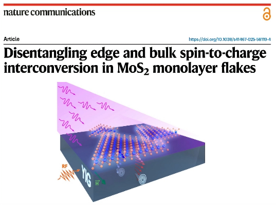

I develop research projects in Condensed Matter Physics with both experimental and theoretical emphasis on the study of magnetic, optical, and spin-dependent electronic transport properties in nanostructured and two-dimensional systems.
The projects are carried out at the Brazilian Centre for Research in Physics (CBPF/MCTI), where I hold the position of Senior Researcher.
News A recent highlight published in Nature Communications (2025) — see the research highlight below.
Research Highlight — Nature Communications (2025)

We investigate the process of spin current injection into an atomic layer of MoS₂, which takes the shape of small triangles, and how the conversion of spin current into charge current occurs differently at the center versus the edge — the former exhibiting semiconductor character and the latter metallic character.
Spin-to-charge conversion in MoS₂ monolayers results from two simultaneous channels: (i) the semiconductor contribution associated with the flake area, attributed to the inverse Rashba–Edelstein effect (IREE), and (ii) the metallic contribution associated with the edges, likely related to the spin Hall effect (SHE). These channels have opposite signs and compete, leading to a compensation point where contributions cancel out.
The work demonstrates that light enables unprecedented control of spin injection — amplifying, attenuating, or switching spin conversion — positioning this as a milestone for opto-spintronics at room temperature.